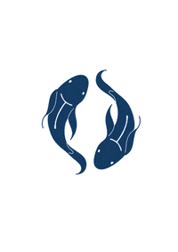
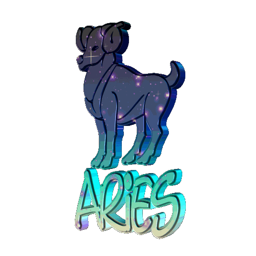
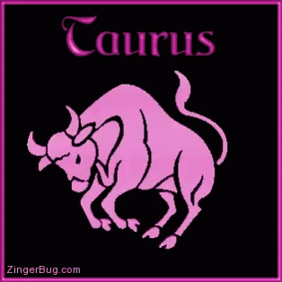
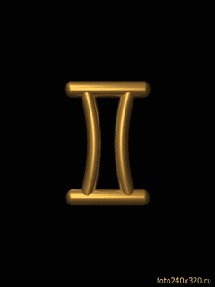
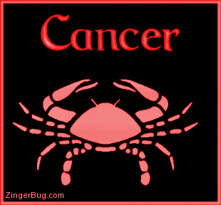
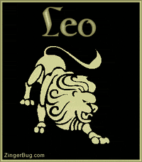
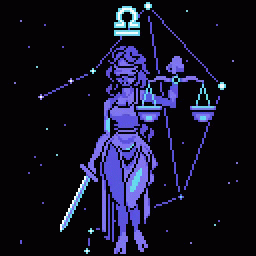
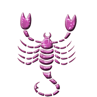
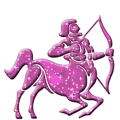
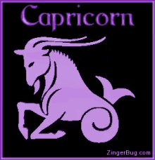

signos |
del |
AMOR |
DINERO |
TRABAJO |
NUMERO |
SALUD |
 |
enero 20-febrero 18 |
Acuario es uno de los signos más espontáneos del horóscopo
y así lo muestran también en cuestión de amor.
se traslada en el terreno emocional y amoroso,
siendo uno de los signos más enamoradizos.
|
Actúe con más cautela en las finanzas y los negocios,
ya que podrían producirse demoras que usted no esperaba.
|
suelen destacar con facilidad en el trabajo. De hecho,
es habitual encontrarlos en altos cargos, dado que no tienen
miedo de innovar y proponer formas de hacer mejor las cosas.
|
19 y 20.
|
Los Acuario suelen tener gran tendencia a que sus dolencias
se vuelvan crónicas, por lo que desde ya temprano
deberán seguir revisiones médicas.
|
 |
febrero 19-marzo 20 |
En el amor, son personas fieles, adaptables
y que buscan incansablemente una unión con la mente
y el espíritu de su pareja
|
la oportunidad de gestionar sus finanzas con una
combinación única de intuición y sabiduría.
|
es un signo marcado por la empatía, la comprensión
y el compañerismo en el trabajo. De la misma forma,
son muy profesionales en todos los aspectos
|
44-12-08. |
sabe que su mente y su cuerpo están conectados,
y tratan los problemas de salud mental con la misma
seriedad que las dolencias de salud física.
|
|  |
marzo 21-abril 19 |
Aman sin límites y anteponen los hechos a las palabras
|
personas que son ambiciosas y creativas,
que buscan en todo momento dar lo mejor de sí
|
los sindicatos son lugares ideales para ellos.
Teniendo en cuenta su espíritu aventurero, también
les puede ir bien como empresarios
|
9, 1, 4 y 7 |
como consecuencia de su interés por el riesgo
y la aventura, es habitual que sufran traumatismos,
accidentes o heridas en la cabeza
y el resto del cuerpo.
|
|  |
abril 20-mayo 20 |
son muy cariñosos y pasionales, por lo que aprecian
el contacto físico y no soportan ser maltratados
|
La persona del signo Tauro ama el dinero,
y no tiene miedo de trabajar duro para conseguirlo
|
conocido por su estabilidad y determinación laboral,
aborda los retos que se le presentan con
pensamientos fríos y estratégicos.
|
6, 2, 5 y 8
|
siempre estará pendiente del estado de salud
de sus familiares. De hecho, en algunas
ocasiones Tauro estará más pendiente
de la salud de los demás que de su propio estado.
|
|  |
mayo 21-junio 20 |
cuando se enamoran, se entregan tanto,
que es necesario poner límites.
|
son unos grandes líderes de los negocios.
|
suelen optar por ocupaciones que suponen tener contacto
con el público y también las que les permitan
hablar y exponer sus ideas.
|
07 y 09
|
La inquietud de los Géminis pueden traer
algunos problemas de nervios.
Los hombros, brazos y pulmones son
los mas perjudicados
|
|  |
junio 21-julio 22 |
Cáncer ama con todo su ser. Son personas que buscan relaciones
profundas y sentirse plenamente queridas
|
Cáncer es un excelente estratega a la hora de administrar
su dinero, siendo un signo que disfruta
con el simple hecho de ahorrar
|
Reflexiona y quizá luego te decidas a dar el paso
y empezar a buscar un nuevo empleo.
|
14 y 18 |
son propensos a padecer obesidad y
todo tipo de problemas digestivos
|
|  |
julio 23-agosto 22 |
es romántico, algo caprichoso, poco fiel
y prisionero de la belleza
|
Leo se encontrará bajo la guía sabia del Sol,
iluminando el camino hacia decisiones financieras sólidas.
|
una de las grandes virtudes de los Leo en el ámbito laborales
que motivan mucho. Son unos entusiastas
de la vida y de todo lo que hacen
|
33, 54, 29, 45, 31 y 14 |
es recomendable que cuide su corazón, ojos
y espalda para así evitar las molestias derivadas de una dieta
inadecuada o bien por los
esfuerzos innecesarios realizados.
|
 |
agosto 23-septiembre 22 |
es una persona cariñosa, entregada y fiel. |
son personas excelentes con su dinero, y
que suelen tener el control de todo aquello que gastan,
esforzándose por ahorrar tanto dinero como pueda.
|
son muy solicitados donde se requiere una gran precisión mental y habilidad |
53, 37, 39, 2, 30 y 23
|
poseen una vitalidad media o inferior a la media,
pero en ocasiones tienen una disposición que puede
considerarse enfermiza o un carácter hipocondriaco
|
|  |
septiembre 23-octubre 22
|
el romanticismo es una constante en su unión, también
la búsqueda de la belleza (tanto física como interna o espiritual)
y su tendencia al hedonismo
|
Procure no desperdiciar las energías en ese negocio que
pretende montar sin medir las consecuencias, ya
que luego se arrepentirá y podrá perder dinero.
|
Los Libra son encantadores, equilibrados y desenvueltos.
Compatibles con todos los signos solares, no tienen
problemas para comunicarse con nadie.
|
15 y 31 |
Los Libra destacan por tener buena salud, sin
embargo, tienen dolencias al igual que ocurre con
todos los signos del zodiaco.
|
|  |
octubre 23-noviembre 21
|
Sospechas de tu pareja y eso te sumerge en un juego mental
peligroso. Seguirle sus movimientos te
creará más confusiones.
|
No estés comentando tus ideas delante de
todos tus colegas, es muy factible que
terminen robándote los proyectos.
|
No les gusta que les den instrucciones sobre cómo hacer
su trabajo. Esto los predestina a ser autónomos,
y buscar trabajos en los que puedan
dar rienda suelta a su sed de acción.
|
28 25 31 54 14 34 |
es el signo que tiene una mayor capacidad
para regenerar sus enfermedades
|
|  |
noviembre 22-diciembre 21 |
intenten controlarlos, son almas libres y,
como se sientan lo más mínimamente
acorralados, saldrán huyendo
|
has de seguir teniendo mucho cuidado y
procurar hacer equilibrios para que las cuentas te salgan
|
son personas muy intuitivas y muy activas en el trabajo,
que siempre están pesando en comenzar nuevos retos profesionales.
|
3, 6 y 9 |
Son propensos a la ciática, la gota, y suelen padecer dolores
en las caderas y en los muslos. Su salud
en líneas generales es buena
|
|  |
diciembre 22-enero 19 |
los Capricornio no se conforman con cualquiera y
están dispuestos a esperar mucho tiempo hasta
que llegue la persona adecuada.
|
Los Capricornio destacan por ser muy buenos para negociar,
si bien es cierto que son excelentes para
ganar dinero en un entorno corporativo.
|
son personas trabajadoras, responsables y dispuestas a persistir
lo que haga falta para conseguir su objetivo
|
1, 8, 4 y 7 |
Disfruta la vida a su máximo exponente en cada oportunidad que tengas
, cada segundo, cada minuto es irrepetible e irrecuperable.
|